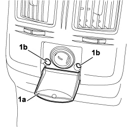
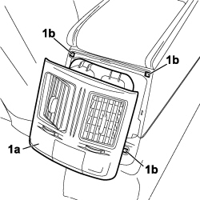
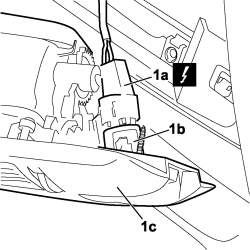

5010C32 AIR VENT ON TUNNEL COVER FOR REAR SEATS - R.R.
- Path
- Procedures > 50 AUXILIARY UNITS > 5010 CLIMATE CONTROL - MISCELLANEOUS > 5010C AIR VENTS > 5010C32 AIR VENT ON TUNNEL COVER FOR REAR SEATS - R.R.
- Kind
- repair procedure (removal / refitting; the operation number is the code)
- Applies to
- all engines; all production periods
- Interactive page
- https://sloeber94.github.io/elrnDB-fCrm/en/#/194000587
Applies to: all engines; all production periods
 Removing
Removing
 Refitting
Refitting- Turn the ignition key to the OFF position.
- Disconnect the negative battery terminal.
Description | Connector | |
|---|---|---|
BATTERY |
1. Lower the cigar lighter access flap (1a) and undo the two fixing bolts (1b).

Applies to: all engines; all production periods
1. Using the special tool, release the vent (1a) from the four retaining clips (1b) and detach it from the tunnel cover.
Tool | Description | Function | Validity |
|---|---|---|---|
1878077000 | Knife | Retainer removal |

Applies to: all engines; all production periods
1. Release the cigar lighter (1b) from the mounting and disconnect the electrical connection (1a), then remove the air vent (1c) from the vehicle.
Description | Connector | |
|---|---|---|
1a | CIGAR LIGHTER/CURRENT SOCKET |

Applies to: all engines; all production periods
Refitting
Removing- Check that the air vent is not damaged.
- Connect the cigar lighter electrical connection and secure it using the mounting.
Description | Connector | |
|---|---|---|
CIGAR LIGHTER/CURRENT SOCKET |
- Fit the vent in the housing on the tunnel cover and attach it using the four retaining clips.
- Lower the cigar lighter access flap and tighten the two vent fixing bolts.
- Connect the negative battery terminal.
Description | Connector | |
|---|---|---|
BATTERY |
Topics linked from this page (2)
Topics that link to this page (21)
- 2125C30 GEAR ENGAGEMENT/SELECTION CABLES - R.R
- 3350E30 LATERAL ACCELERATION AND SLEWING SENSOR - R.R
- 3380A10 HANDBRAKE LEVER - R+R
- 3380A30 HANDBRAKE CABLE - R+R
- 5010B47 SIDE AIR DUCT TO REAR SEATS (ONE), LH OR RH - R.R.
- 5010B56 DUCT BETWEEN CLIMATE CONTROL SYSTEM HOUSING AND AIR DUCT TO REAR SEATS - R.R.
- 5040C10 AIR CONDITIONING CASING - R.R
- 5040C50 AIR CONDITIONING HEATER RADIATOR - R.R.
- 5040C64 A/C EVAPORATOR - R+R
- 5040D80 AIR CONDITIONER SYSTEM WIRING BUNDLE - R R OR REPLACE
- 5040D94 AIR CONDITIONING LEFT UPPER AIR DISTRIBUTION FLAP MOTOR (DEFROST) - R.R
- 5505C10 FRONT CROSSMEMBER WIRING - R.R
- 5505C31 BUILT-IN WIRING UNDER DASHBOARD - R.R.
- 5505C41 PASSENGER COMPARTMENT WIRING - R.R
- 7040A10 DASHBOARD TRIM - R+R
- 7040A97 INSTRUMENT PANEL TRIM SUPPORTING CROSSMEMBER - R.R
- 7040L17 PASSENGER COMPARTMENT FLOOR FRONT CARPET - R.R.
- 7040L18 PASSENGER COMPARTMENT FLOOR REAR CARPET - R.R.
- 7040L20 TUNNEL COVER - R.R
- 7045A23 SUPPORT/GUIDE FOR FRONT SEAT, LEFT OR RIGHT - R.R.
- 7095E22 SOUND-PROOF PANEL UNDER DASHBOARD SUPPORTING CROSSMEMBER - R.R.